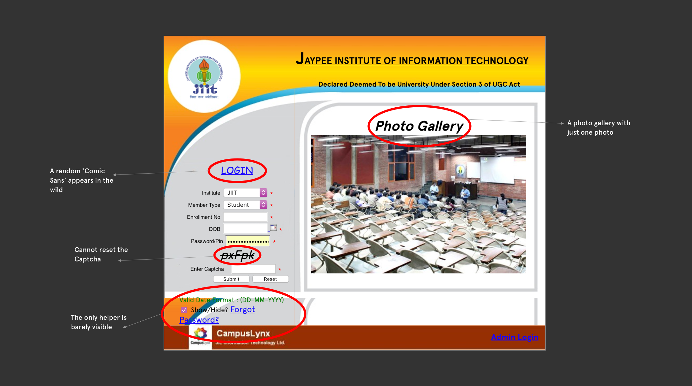
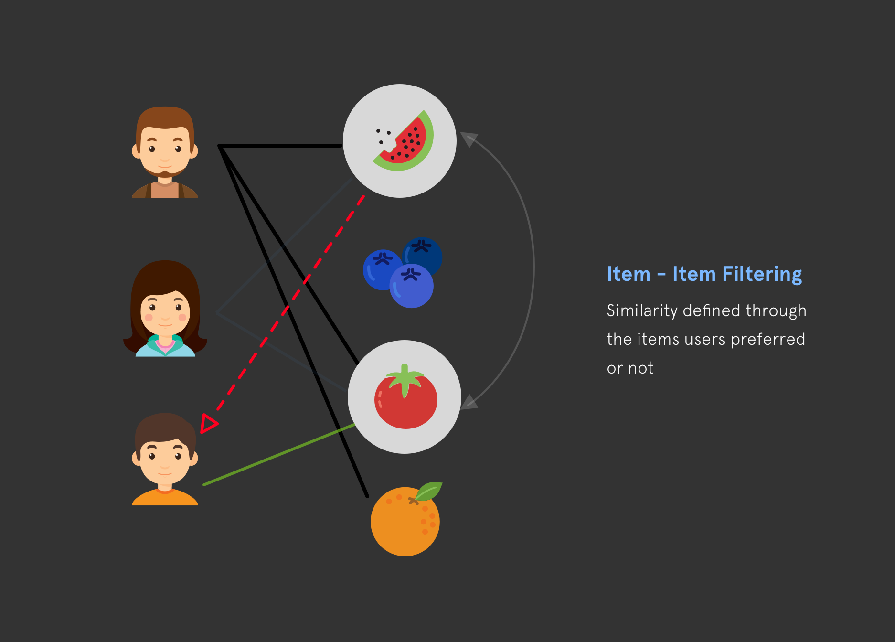
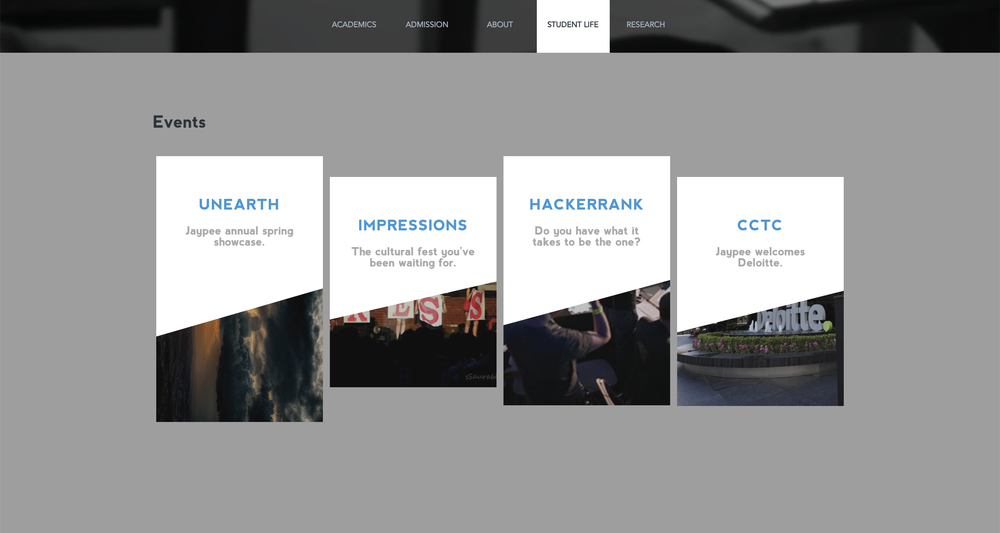
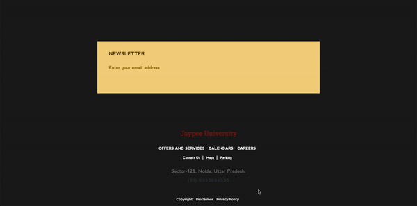
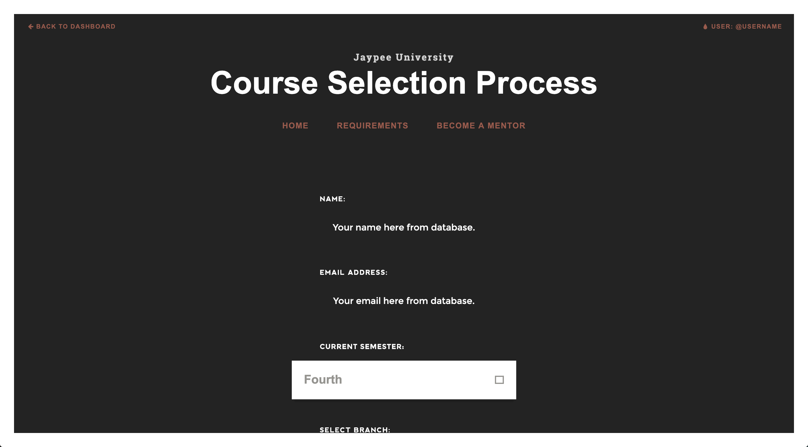

Role
Visual Design, Front-end Development, Server-side Development
Type
Group: Team of 3
Timeline
Jan, 2016 - Jun, 2016 (6 Months)
Introduction
Every student dreads the infamous course registration process; selecting courses every term, navigating around a UI plagued with rich text and no helpers to guide you, making you feel like you lack web litracy. This project was taken as a personal dissatisfaction against the university student dashboards and the user experience surrounding one.
1. Background
While the overall design of the main page is fairly usable, the problems begin to unearth as one dives deeper into the nested pages, especially the students page. There was no clear segregation between prospective or current students. The visual design finally breaks apart in the login screen, and the student's dashboard.
The deeper problem was not just design, it was the implementation. There was dearth of resources that could advise students on what courses would be appropriate for them in the following term. A quick chat with my fellow peers revealed the most obvious problems within the system:
"The website is practically unsuable on the day of registration."
"This one time I accidentally dropped a course I wanted to take in the middle of registration because there was no feedback on any click."
"I had no idea what to take so I blocked a couple of extra courses just to be sure they don't run out."
The aim of this project became clear; we wanted to redesign the college website that addresses majority of these qualms so as to improve their overall registration process experience.
2. Challenges
2.1 Not a Landing Page
A University website is very different from a usual landing page; there are tons of things to keep in mind. Moreover, it has to be dependable as many of the students and faculty look up to it to keep themselves updated about what is happening in the university. Therefore, we wanted to start small and let the feedback dictate where it leads us; starting with creating the home page, the students page, and the students dashboard and moving accordingly.
2.2 Student Data
Recommendation engines rely heavily on data for accurate results, therefore garnering student data that told us about their interests and skills was a challenge. We initially decided to get user data as we more and more users.
2.3 Visual Redesign was not the Solution
While it seemed easier to just make the university website pretty and expect it to be a huge redesign, there was nothing novel in the functionality. Therefore, after evaluating what is within our reach, we decided to create a mini recommender system that suggests courses to students based on their interests and their performance in the previous terms. The technique used was collaborative filtering, which is a method for making predictions about the interests of a user by collecting preferences from many users.
3. Implementation
3.1 Homepage Redesign
Starting from ground up, we streamlined the homepage experience to have a full-width jumbotron that displays immediate information about the univeristy website, with an action button; information about univeristy, academics, student life and research initiatives, along with a horizontal navbar for quick access to the same. The second section was all about the current events happening in the college, followed by the footer.
-

- 
-

- 
3.2 Dashboard Redesign
The dashboard was also revamped by including the important information first, based from the user interviews what sections they accessed the most. The most common ones were 'subject registration' and 'teaching assistantship application', along with a non-persistent sidebar that was less intrusive in comparison to a persistent one.
3.3 Recommendation System
The final step was to implemenet the recommendation engine within the dashboard itself. Since this was our first time working with collaborative filtering, we wanted to test it out first; initially we decided to have users enter some details and enter their skills and interests in an input box (comma-separated). Then the system would contact them via email with the links to the recommended courses.
Impact
4.1 Key Learnings
- Ease of use: Users don't really care how big of a functionality you are implementing, unless it is implemented in a complete and coherent manner. In our case, we thought the recommender system would be a game changer, but the effort behind entering every skill/interests weared them off.
- Design from the ground-up: Designing and developing from scratch within a small team helped us design with developer constraints in mind; not everything that can be designed is feasible in code.
What's Next
The next step is to improve upon our recommender system; instead of asking the user to input every information, we plan on synchronising user information via there google accounts by using 'Google OAuth' integration in our application. Secondly, we plan on rolling out the website to more and more students to get more feedback on the overall visual design and the idea behind getting course recommendations.